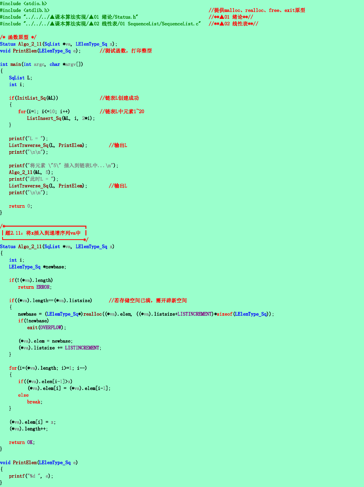
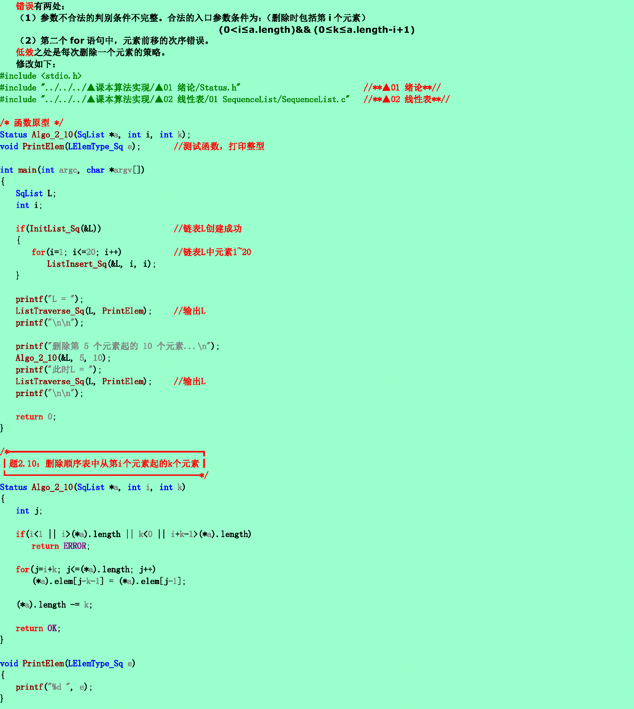

问题１．
已知指针ha和hb分别指向两个单链表的头结点，并且已知两个链表的长度分别为m和n。试写一算法将这两个链表连接在一起（即令其中一个表的首元结点连在另一个表的最后一个结点之后），假设指针hc指向连接后的链表的头结点，并要求算法以尽可能短的时间完成连接运算。请分析你的算法和时间复杂度。
算法思想：
对于两个含头结点的单链表，将其中一个的首元结点链接在另一个单链表的最后一个结点之后，不要求时间复杂度最优的情况下可以随意交换连接的顺序，但若要求尽可能快，需要注意在连接时，不动的那个需要从头结点遍历到尾节点，之后直接把尾结点的next域指向另一个单链表的首元结点即可，也就是说，算法所需要的时间复杂度主要是在遍历的时候造成的，所以被遍历的那个单链表的长度应该越短越好，所以我们应该把长的单链表的尾指针指向短的单链表的首元结点，也就是把短的连接到长的后面，最后的改变指针指向操作是一瞪眼的事儿.
问题２．
设顺序表va中的数据元素递增有序。试写一算法，将x插入到顺序表的适当位置上，以保持该表的有序性．
算法思想：
由于顺序表是可以随机存取的（任意位置存取），所以考虑从最后一个元素开始，依次比较x与该位置元素的大小，若x大于该点元素，则把ｘ直接插在该元素后面就可以了，否则，依次把ｘ向前遍历，直到到达一个满足ｘ大于遍历点元素的位置，将ｘ插在该点之后就可以了。

问题３．从顺序表中删除从第i个元素起的ｋ个元素
算法思想
即删除从第i个元素到第i＋k－１个元素共k个元素，所以把从第i+k个元素起
的元素前移到第i个元素起的后续位置上，注意位序比下标多1.
